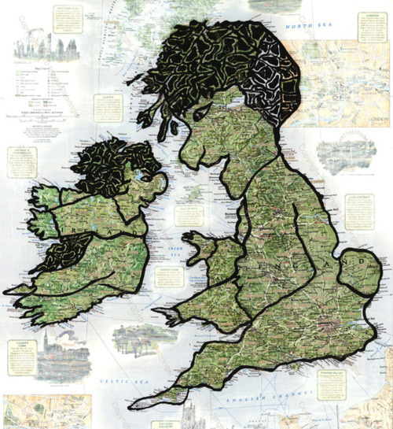

Thu, 14 Jul 2011 21:20:33 · map · creative
The Secret Lives of Maps

A series of stories found hidden in geography. Artist Ingrid Dabringer brilliantly and creatively transforms normal maps into whimsical people and creatures, using paint to reveal their hidden shapes - Find out more stories here.